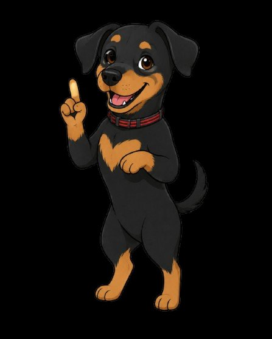

Escreva um trecho de texto e observe como o modelo o completa.
Lembre-se: este é um modelo base de 2019 — ele continua o texto, não responde perguntas.
Ajuste os parâmetros e veja como eles mudam o comportamento.
Prof. Danny · IDP

⚠️ Na primeira vez, o modelo (~120 MB) é baixado e fica salvo no navegador.
Tudo roda localmente na sua máquina — nenhum dado é enviado a servidores.
Pronto para carregar. Clique em "Gerar" para iniciar.
Parâmetros de geração
Passe o mouse sobre cada um para entender o efeito.
Quantas palavras/pedaços o modelo vai gerar.
Baixa = previsível e repetitivo. Alta = criativo e caótico.
Limita a escolha às K palavras mais prováveis.
Considera só as palavras que somam P de probabilidade.